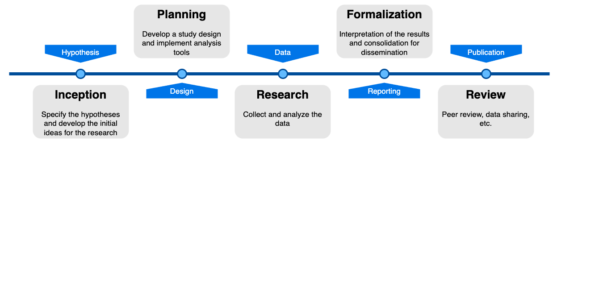
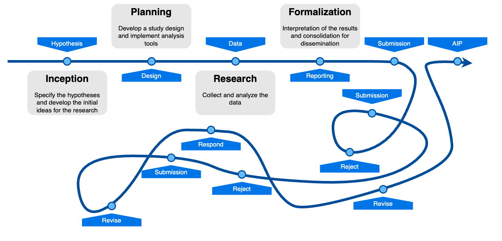
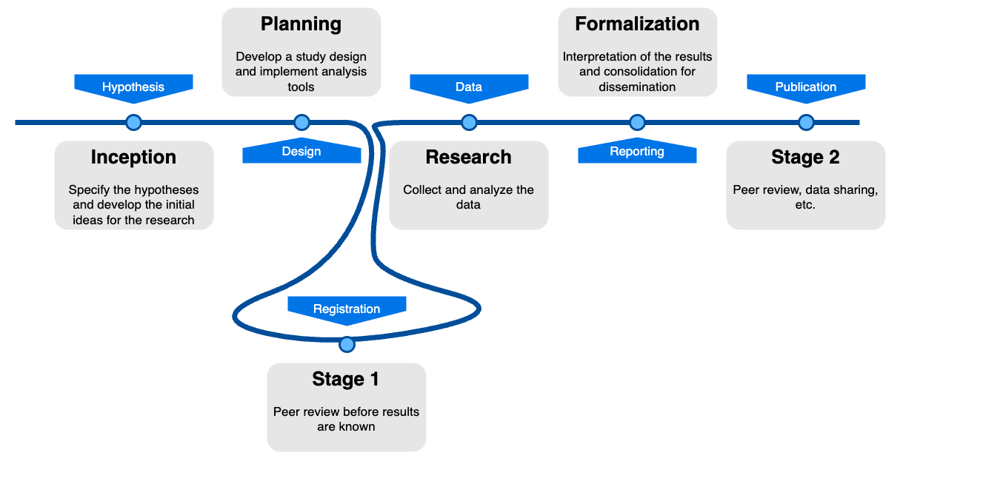

name: title layout: true class: center --- layout: false count: false .middle.center[ # Pre-registering methods-oriented neuroimaging research ## Why, when, and how? <br /> <br /> ### Oscar Esteban #### [AxonLab](https://www.axonlab.org/team/) | Lausanne University Hospital (CHUV) ###### [oesteban.github.io/talks/BHD2023](https://oesteban.github.io/talks/BHD2023/) ] --- layout: false count: false .middle.center[ # Pre-registering methods-oriented neuroimaging research ## Why, when, and how? <br /> <br /> ### Oscar Esteban #### [AxonLab](https://www.axonlab.org/team/) | Lausanne University Hospital (CHUV) ###### [oesteban.github.io/talks/BHD2023](https://oesteban.github.io/talks/BHD2023/) ] --- name: newsection layout: true .perma-sidebar[ <p class="rotate"> <a rel="license" href="http://creativecommons.org/licenses/by/4.0/"><img alt="Creative Commons License" style="border-width:0; height: 20px; padding-top: 6px;" src="https://i.creativecommons.org/l/by/4.0/88x31.png" /></a> <span style="padding-left: 10px; font-weight: 600;">Pre-registering methods-oriented neuroimaging research</span> </p> ] --- # Correction -- <br /> <br /> <br /> ## Where the title refers to *pre-registration* <br /> -- it should instead point at <br /> ## Registered Reports (RRs) --- <p align="center"> <br /><br /> </p> --- <p align="center"> <br /><br /> </p> --- <p align="center"> <img src="images/quiz-successful-scientific-career.png" width="90%" /><br /><br /> </p> --- <p align="center"> <br /><br /> </p> --- <p align="center"> <br /><br /> </p> --- <p align="center"> <br /><br /> </p> --- # The paradox (Prof. C. Chambers) -- <br /> <br /> <br /> ## Results determine careers <br /> -- and <br /> ## Resarchers SHOULD NOT determine results. --- # Outline .boxed-content[ .distribute.large[ * Why we need to address this paradox * What is a registered report? * Responding to when and how with two use cases * The PCI RR community * Journal pathway * Limitations and PCI's RRs 2.0 * Wrap-up ] ] --- <p align="center"> <a href="https://www.cos.io/initiatives/registered-reports"> <img src="https://cdn.cos.io/media/images/Hypothetico-deductive_scientific_method-1.original.png" width="85%" /><br /><br /> Center for Open Science (COS) - RRs' Details & Workflow</a> </p> --- # What are Registered Reports? <p align="center"> <br /><br /> </p> --- # What are Registered Reports? <p align="center"> <br /><br /> </p> --- # What are Registered Reports? <p align="center"> <br /><br /> </p> --- # What are Registered Reports? <br /> <p align="center"> <a href="https://www.cos.io/initiatives/registered-reports"> <br /><br /> Center for Open Science (COS) - RRs' Details & Workflow</a> </p> --- # Learning by doing .pull-left[ <p align="right"> <a href="https://rr.peercommunityin.org/articles/rec?id=346"> https://rr.peercommunityin.org/articles/rec?id=346 </a> </p> <br /> ] -- .pull-right[ <p align="left"> <a href="https://doi.org/10.6084/m9.figshare.19579873.v1"> 10.6084/m9.figshare.19579873.v1 </a> </p> ] --- # Defacing RR — motivation .pull-left[ <p align="right"> <br /> <br /> <br /> .tiny[Provins, C., … Esteban, O. (2022). 28<sup>th</sup> OHBM. Glasgow, Scotland, UK.] </p> ] -- .pull-right[ <p align="left"> <img src="images/defacing-humans-ba.png" width="95%" /> </p> ] <!-- - We had done a pilot study presented in OHBM 2022 suggesting machines and humans see quality in defaced T1w images differently as compared to the original image. - Why registration: because there was potential for the project to become a rabbit-hole: - Difficult to interpret - Or worse, a moving target - High risk, low return project --> --- # Defacing RR — lessons learned -- -- <!-- - Introduce the experiments - Pre-registration showed its benefits early on: - Moved from categorical ratings to interval scale - Realized that a nested design would not give us the statistical power - need for q-kay --> --- # Defacing RR — timeline <p align="center"> <img src="images/defacing-RRs-timeline.png" width="90%" /><br /><br /> </p> <!-- - We worked on a pre-registration document for 6 months, and attempted a submission to NeuroImage. - Submission to PCI RR - Report timing of reviews - Recommender (editor) first requested us to improve several items: - Most importantly, to remove speculative statements on our abstract and the removal of the discussion. - Review had really high quality: - Showcase examples of useful changes. --> --- # Defacing RR — the PCI RR <!-- STAGE 1 - what does that mean - List collaborating journals recommended to us (automatic acceptance) - Mention friendly journals (acceptance not guaranteed) - Mention other journals (acceptance not guaranteed and withdrawal) --> --- # Learning by doing .pull-left[ <p align="right"> <a href="https://rr.peercommunityin.org/articles/rec?id=346"> https://rr.peercommunityin.org/articles/rec?id=346 </a> </p> <br /> ] -- .pull-right[ <p align="left"> <a href="https://doi.org/10.6084/m9.figshare.19579873.v1"> 10.6084/m9.figshare.19579873.v1 </a> </p> ] --- # HCPh RR <!-- workflow? --> <!-- - Explain how this is a different type of RR, for larger projects - Mention Programmatic RRs at PCI RR and defer discussion to later. --> --- # Why RRs? (Ph.D. Students, postdocs) .boxed-content[ .distribute.larger[ .nodim[ * .large.bold[Brings about the most onerous aspects of research] * If there is no (clear) project, you better learn soon. * Helps build a better understanding of the workflow. ] .dim[ * .large.bold[Secure publication] * Helps detect major issues early on (e.g., data are not workable). * Pushes the experience of peer-review early. ] .dim[ * .large.bold[Transparency is built-in] * Better communication within stakeholders (mentors, collaborators) * Better communication toward publication (editors, reviewers) ] ]] --- # Why RRs? (Ph.D. Students, postdocs) .boxed-content[ .distribute.larger[ .dim[ * .large.bold[Brings about the most onerous aspects of research] * If there is no (clear) project, you better learn soon. * Helps build a better understanding of the workflow. ] .nodim[ * .large.bold[Secure publication] * Helps detect major issues early on (e.g., data are not workable). * Pushes the experience of peer-review early. ] .dim[ * .large.bold[Transparency is built-in] * Better communication within stakeholders (mentors, collaborators) * Better communication toward publication (editors, reviewers) ] ]] --- # Why RRs? (Ph.D. Students, postdocs) .boxed-content[ .distribute.larger[ .dim[ * .large.bold[Brings about the most onerous aspects of research] * If there is no (clear) project, you better learn soon. * Helps build a better understanding of the workflow. ] .dim[ * .large.bold[Secure publication] * Helps detect major issues early on (e.g., data are not workable). * Pushes the experience of peer-review early. ] .nodim[ * .large.bold[Transparency is built-in] * Better communication within stakeholders (mentors, collaborators) * Better communication toward publication (editors, reviewers) ] ]] --- # Why RRs? (ECRs, consolidated PIs) .boxed-content[ .distribute.larger[ .nodim[ * .large.bold[Secures the realization of the project] * Effectively avert procrastination * Identify bottlenecks before project derails ] .dim[ * .large.bold[RRs are effective to track the project] * RRs generate a roadmap as opposed to creating the path as you go * Progress is easier to demonstrate to third parties ] .dim[ * .large.bold[Transparency is built-in] * Openness has longstanding benefits (cf. preprints) ] ]] --- # Why RRs? (ECRs, consolidated PIs) .boxed-content[ .distribute.larger[ .dim[ * .large.bold[Secures the realization of the project] * Effectively avert procrastination * Identify bottlenecks before project derails ] .nodim[ * .large.bold[RRs are effective to track the project] * RRs generate a roadmap as opposed to creating the path as you go * Progress is easier to demonstrate to third parties ] .dim[ * .large.bold[Transparency is built-in] * Openness has longstanding benefits (cf. preprints) ] ]] --- # Why RRs? (ECRs, consolidated PIs) .boxed-content[ .distribute.larger[ .dim[ * .large.bold[Secures the realization of the project] * Effectively avert procrastination * Identify bottlenecks before project derails ] .dim[ * .large.bold[RRs are effective to track the project] * RRs generate a roadmap as opposed to creating the path as you go * Progress is easier to demonstrate to third parties ] .nodim[ * .large.bold[Transparency is built-in] * Openness has longstanding benefits (cf. preprints) ] ]] --- # Unwarranted criticism .boxed-content[ .distribute.larger[ .nodim[ * .large.bold[(Pre)registration only works with clear hypotheses] * *if all research is pre-registered, we will not generate creative, new solutions* * Not applicable to qualitative research and development of new methodologies ] .dim[ * .large.bold[Pre-registration increases the risk of being scooped] * If you just pre-register, equivalent risk to pre-prints * RR Stage 1 studies can be embargoed * RR guarantees publication ] .dim[ * .large.bold[Data must not exist] * It's a matter of controlling for biases ] ]] --- # Unwarranted criticism .boxed-content[ .distribute.larger[ .dim[ * .large.bold[(Pre)registration only works with clear hypotheses] * *if all research is pre-registered, we will not generate creative, new solutions* * Not applicable to qualitative research and development of new methodologies ] .nodim[ * .large.bold[Pre-registration increases the risk of being scooped] * If you just pre-register, equivalent risk to pre-prints * RR Stage 1 studies can be embargoed * RR guarantees publication ] .dim[ * .large.bold[Data must not exist] * It's a matter of controlling for biases ] ]] --- # Unwarranted criticism .boxed-content[ .distribute.larger[ .dim[ * .large.bold[(Pre)registration only works with clear hypotheses] * *if all research is pre-registered, we will not generate creative, new solutions* * Not applicable to qualitative research and development of new methodologies ] .dim[ * .large.bold[Pre-registration increases the risk of being scooped] * If you just pre-register, equivalent risk to pre-prints * RR Stage 1 studies can be embargoed * RR guarantees publication ] .nodim[ * .large.bold[Data must not exist] * It's a matter of controlling for biases ] ]] --- # Limitations .boxed-content[ .distribute.large[ * **Outer interface** (inputs and outputs). Also, consider an internal data structure format for high throughput. * **Implementation** (WDL vs. programmed): code styling, best practices, BIDS-Apps. * **Modularize** (see *NiPreps* and *TemplateFlow*). * Use **containers** to ensure software delivery and reproducibility. * Implement testing and **continuous integration** to catch errors early and streamline development. * **Version** the workflow and its components to ensure compatibility and track changes, issue **LTS**. * Promote **community** and social standardization through collaboration, documentation, telemetry, and open-source practices. * **Visual reporting** ]] --- # BIDS-Apps: subject-wise parallelization <p align="center"> <a href="https://doi.org/10.1371/journal.pcbi.1005209"> <img src="../journal.pcbi.1005209.g002.png" width="90%" /><br /><br /> (Gorgolewski et al., 2017) </a> </p> --- ## The individual report <p align="center"> <video controls="controls" width="70%" name="Video Name" src="../fmriprep-report.mov"></video> </p> --- # Why standarizing? .boxed-content[ .distribute.large[ * Pushing the *truck factor* above 1.0. * Engage users ]] --- # "Analysis-grade" data .larger[ The *NeuroImaging PREProcessing toolS* (*[NiPreps](https://nipreps.org).org*) augment scanners to produce *analysis-grade* data (= **directly consumable by analyses**) ] <br /> .pull-left[ ***Analysis-grade* data** is an analogy to the concept of "*sushi-grade (or [sashimi-grade](https://en.wikipedia.org/wiki/Sashimi)) fish*" in that both are: .large[**minimally preprocessed**,] and .large[**safe to consume** directly.] ] .pull-right[ <img align="right" style='margin-right: 50px' src="https://1.bp.blogspot.com/-Osh4H4WXka0/WlMJmVgkZTI/AAAAAAAAEMY/GynUzSomJ-EBiyqv2m-maiOyKSM7SOmNACLcBGAs/s400/yellowfin%2Btuna%2Bsteaks%2Bnutrition.jpg" /> ] --- <p align="center"> <img src="../nipreps-chart.png" width="63%" /><br /> <em>NiPreps</em> (<a href="https://doi.org/10.31219/osf.io/ujxp6">Esteban et al., 2020</a>) </p> --- template: title layout: false .middle[ <p align="center"> <img src="https://github.com/oesteban/fmriprep/raw/f4c7a9804be26c912b24ef4dccba54bdd72fa1fd/docs/_static/fmriprep-21.0.0.svg" width="95%" /> </p> ] --- # *TemplateFlow* <p align="center"> <img src="https://www.templateflow.org/assets/templateflow_fig-birdsview.png" width="60%" /><br /> (<a href="https://doi.org/10.1038/s41592-022-01681-2">Ciric et al., 2022</a>) </p> --- # *TemplateFlow* | Client <div class="asciicast" id="501873"></div> --- # Conclusion <p align="center"> <img src="https://media.springernature.com/full/springer-static/image/art%3A10.1038%2Fs41596-020-0327-3/MediaObjects/41596_2020_327_Fig1_HTML.png?as=png" width="90%" /><br /> (<a href="https://doi.org/10.1038/s41596-020-0327-3">Esteban et al., 2020</a>) </p> --- .boxed-content[ .middle.center[ # Thanks! ### Questions? #### NiPreps Hackathons 2023 - ISMRM and OHBM ] ]